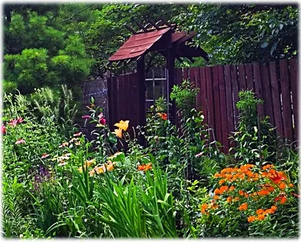

Welcome to Hollyhock Lane
A friendly journal of cottage gardening and gentle home keeping — plain-spoken guides to growing flowers and vegetables, caring for a lawn, and tending the small repairs that keep a home snug, all at an unhurried pace.

Grow a garden you love
A cottage garden is a generous, forgiving thing. It does not ask for perfection or expensive tools — only a little attention, a willingness to learn as you go, and the patience to let things grow in their own time. Our Plant Care guide covers the gentle fundamentals: how to water well, read your soil, place a plant in the right light, and prune without fear.
Whether you tend a sweep of borders or a few pots by the door, the basics are the same, and they are kinder and simpler than you might think.

Keep a healthy lawn
A good lawn is less about hard work than about a few sensible habits — mowing high, watering deeply but seldom, and feeding the soil rather than fighting it. Our Lawn Care guide walks through the seasonal rhythm, from spring's first cut to autumn's overseeding, with gentle, low-water options for those who would rather not fuss.

Garden without the aches
If bending and kneeling have grown harder, a raised bed can give you years more happy gardening. Our Raised Beds guide shows how to build a simple bed, and how a waist-height version brings the soil up to a comfortable level — no stooping required. It is one of the kindest things you can do for a gardener's back and knees.
We write every guide with comfort in mind, favoring the gentler way of doing each job — the long-handled tool over the stoop, the deep weekly soak over the daily fuss, the sit-down bed over the kneel-down row.
Bring a little green indoors
When the weather turns and the beds are put to rest, a few houseplants keep a gardener's hands busy and a room full of life. Our Plant Care guide ends with a friendly section on easy, forgiving houseplants — the pothos, the snake plant, the spider plant — that thrive on a little benign neglect and ask almost nothing in return.
Never wonder what to do this month
Gardening is really a conversation with the seasons, and it helps to know roughly what each month asks of you. Our Garden Calendar lays out the year month by month, and you can set it to your own USDA hardiness zone so the timing fits your corner of the country. It is a gentle reminder, not a stern schedule — a friendly nudge toward the right job at the right time, and a reassurance on the days you are not sure where to begin.
And a little home keeping, too
A home, like a garden, stays well with small, regular attention. Our Home Repairs guide covers the simple, satisfying fixes that keep a house comfortable: silencing a squeaky door, sealing a drafty window, freshening tired caulk, and cleaning a clogged faucet aerator. We stick to the gentle, low-risk jobs, we flag every safety step plainly, and we are always honest about when a task is better left to a licensed professional.
Gardening at a gentle pace
Above all, we believe that a garden and a home should be sources of pleasure, not pressure. There is a myth that gardening means endless toil and a lawn means constant labor, but it need not be so. Nearly everything worth doing can be done slowly, in short and pleasant sessions, with the gentler tool and the easier method. A deep weekly watering instead of a daily fuss; a raised bed instead of a stooping row; a few tough perennials that return on their own; a lawn mown high that mostly looks after itself. These are the choices that keep gardening a joy for a lifetime.
So please do not feel you must do everything, or do it on any schedule but your own. A garden tended for an unhurried hour here and there is still a beautiful garden, and a far happier one than a garden tended in a rush. We will always lean toward the kinder, simpler way, because that is the way that lasts — and the way that leaves time to sit back with a cup of tea and simply enjoy what you have grown.
A word about Hollyhock Lane
Hollyhock Lane is an independent gardening and home journal. Everything here is free to read, we sell nothing, and we offer no services — only clear, patient guidance written for growers and homekeepers of every age, and with older hands especially in mind. The type is large and grows larger at a tap, the photographs are real, and the advice is plain. We have no shop, no affiliate links, and no interest in anything but helping your garden and home flourish. When we point you elsewhere, it is to free, trustworthy help — most often your local Cooperative Extension office, one of the finest and most underused resources a gardener has.
And if you are only just beginning, you are especially welcome. Everyone who gardens was once a beginner who was not sure which end of the seedling went up, and the plants are far more forgiving than you fear. Start small, expect a few happy failures, and let your confidence grow alongside your garden. Pull on your gloves and begin wherever you like. Plant Care is a lovely place to start, and the Garden Calendar will tell you what the month has in mind.